While I was browsing the internet to complete my notes in my recently concluded course in Coursera, Building Data Visualization Tools, I came across a presentation by Erika Fille using R that used data from the Philippines. I didn’t have an inkiling were to obtain data locally, and decided to try duplicating the presentation using what I have recently learned about mapping in R.
At the start I only wanted to duplicate the presentation which was done using packages included in base R. However, the richness of R has grown over the past years that newer packages offer something new, different and definitely worth exploring. Join me as we explore the many fascinating ways to make maps in R.
library(sp)
library(rmarkdown)
library(dplyr)
library(lubridate)
library(ggmap)
library(ggplot2)
library(viridis)
The data for this presentation was downloaded from the USGS Search Earthquake Catalog website https://earthquake.usgs.gov/earthquakes/search/ and contains a record of all earthquakes that occured around the island of Bohol from October 15, 2015 to October 17, 2015.
The following search parameters were used and a square was drawn over the map of Bohol and its neighboring areas:
| parameter | value |
|---|---|
| Minimum Magnitude | 2.5 |
| Start Date/Time | (UTC) 2013-10-15 00:00:00 |
| End Date/Time | (UTC) 2013-10-17 00:00:00 |
Oct_2015_Quake <- read.csv("query.csv")
| variable | description |
|---|---|
| time | Time when the event occurred. Times are reported in milliseconds since the epoch ( 1970-01-01T00:00:00.000Z), and do not include leap seconds. In certain output formats, the date is formatted for readability. |
| latitude | Decimal degrees latitude. Negative values for southern latitudes. |
| longitude | Decimal degrees longitude. Negative values for western longitudes. |
| depth | Depth of the event in kilometers. |
| mag | The magnitude for the event. |
| magtype | The method or algorithm used to calculate the preferred magnitude for the event. |
| nst | The total number of seismic stations used to determine earthquake location. |
| gap | The largest azimuthal gap between azimuthally adjacent stations (in degrees). |
| dmin | Horizontal distance from the epicenter to the nearest station (in degrees). 1 degree is approximately 111.2 kilometers. |
| rms | The root-mean-square (RMS) travel time residual, in sec, using all weights. This parameter provides a measure of the fit of the observed arrival times to the predicted arrival times for this location. |
| net | The ID of a data contributor. Identifies the network considered to be the preferred source of information for this event. |
| id | A unique identifier for the event. |
| updated | Time when the event was most recently updated. |
| place | Textual description of named geographic region near to the event. |
| type | Type of seismic event. |
| horizontaError | The horizontal location error, in km, defined as the length of the largest projection of the three principal errors on a horizontal plane. |
| depthError | Uncertainty of reported depth of the event in kilometers. |
| magError | Uncertainty of reported magnitude of the event. The estimated standard error of the magnitude. |
| magNst | The total number of seismic stations used to calculate the magnitude for this earthquake. |
| status | Indicates whether the event has been reviewed by a human. |
| locationsource | The network that originally authored the reported location of this event. |
| magSource | The root-mean-square (RMS) travel time residual, in sec, using all weights. This parameter provides a measure of the fit of the observed arrival times to the predicted arrival times for this location. |
NOTE Information about the variables were obtained from https://earthquake.usgs.gov/data/comcat/data-eventterms.php
str(Oct_2015_Quake)
## 'data.frame': 83 obs. of 22 variables:
## $ time : Factor w/ 83 levels "2013-10-15T00:12:32.050Z",..: 83 82 81 80 79 78 77 76 75 74 ...
## $ latitude : num 9.7 9.93 9.77 9.89 9.82 ...
## $ longitude : num 124 124 124 124 124 ...
## $ depth : num 10 24.4 10 21 24 ...
## $ mag : num 5.3 4.9 4.8 4.8 4.5 4.9 4.6 5.2 4.9 4.6 ...
## $ magType : Factor w/ 3 levels "mb","mwb","mww": 1 1 1 1 1 1 1 1 1 1 ...
## $ nst : logi NA NA NA NA NA NA ...
## $ gap : int 43 71 112 103 148 67 174 72 78 77 ...
## $ dmin : num 3.16 3.25 3.34 3.18 8.48 ...
## $ rms : num 1.39 1.29 0.63 0.55 0.79 1.09 0.91 0.78 0.81 0.81 ...
## $ net : Factor w/ 1 level "us": 1 1 1 1 1 1 1 1 1 1 ...
## $ id : Factor w/ 83 levels "usb000kdb4","usb000kdbw",..: 38 37 83 36 82 35 81 34 33 32 ...
## $ updated : Factor w/ 14 levels "2013-12-30T23:41:07.000Z",..: 6 5 5 5 5 5 5 5 4 4 ...
## $ place : Factor w/ 80 levels "0km ENE of Catigbian, Philippines",..: 66 25 31 38 45 28 12 9 17 73 ...
## $ type : Factor w/ 1 level "earthquake": 1 1 1 1 1 1 1 1 1 1 ...
## $ horizontalError: logi NA NA NA NA NA NA ...
## $ depthError : num 1.6 2.5 1.5 4 10.1 2.7 3.1 1.7 1.8 4.1 ...
## $ magError : num 0.048 0.066 0.134 0.088 0.18 0.076 0.207 0.052 0.07 0.105 ...
## $ magNst : logi NA NA NA NA NA NA ...
## $ status : Factor w/ 1 level "reviewed": 1 1 1 1 1 1 1 1 1 1 ...
## $ locationSource : Factor w/ 1 level "us": 1 1 1 1 1 1 1 1 1 1 ...
## $ magSource : Factor w/ 1 level "us": 1 1 1 1 1 1 1 1 1 1 ...
head(Oct_2015_Quake)
## time latitude longitude depth mag magType nst gap
## 1 2013-10-16T23:37:28.370Z 9.7020 123.7936 10.00 5.3 mb NA 43
## 2 2013-10-16T22:19:12.410Z 9.9295 123.9820 24.42 4.9 mb NA 71
## 3 2013-10-16T18:57:59.450Z 9.7679 123.5686 10.00 4.8 mb NA 112
## 4 2013-10-16T17:04:31.940Z 9.8926 124.0694 20.96 4.8 mb NA 103
## 5 2013-10-16T15:35:33.090Z 9.8188 123.8910 24.02 4.5 mb NA 148
## 6 2013-10-16T15:32:45.430Z 9.5926 123.7010 20.22 4.9 mb NA 67
## dmin rms net id updated
## 1 3.156 1.39 us usb000kfbv 2015-01-30T04:34:03.305Z
## 2 3.250 1.29 us usb000kfad 2013-12-30T23:41:11.000Z
## 3 3.338 0.63 us usc000kpb6 2013-12-30T23:41:11.000Z
## 4 3.177 0.55 us usb000kevr 2013-12-30T23:41:11.000Z
## 5 8.476 0.79 us usc000kpaz 2013-12-30T23:41:11.000Z
## 6 3.120 1.09 us usb000kesc 2013-12-30T23:41:11.000Z
## place type horizontalError depthError
## 1 6km SW of Bood, Philippines earthquake NA 1.6
## 2 2km S of Panaytayon, Philippines earthquake NA 2.5
## 3 3km ENE of Dalaguete, Philippines earthquake NA 1.5
## 4 3km SW of Sagbayan, Philippines earthquake NA 4.0
## 5 4km NNW of Antequera, Philippines earthquake NA 10.1
## 6 2km W of Duljo, Philippines earthquake NA 2.7
## magError magNst status locationSource magSource
## 1 0.048 NA reviewed us us
## 2 0.066 NA reviewed us us
## 3 0.134 NA reviewed us us
## 4 0.088 NA reviewed us us
## 5 0.180 NA reviewed us us
## 6 0.076 NA reviewed us us
While reading the function in R using the function read.csv, i forgot to specify the argument stringsAsFactors = FALSE and we ended up with a lot of factor variables as shown by the output of the function str above. Fortunately we only need a few variables for our purpose of plotting the 2013 Bohol Earthquake.
The variable time is read in as a factor variable and in order for that variable to convey the quantity of time, we need to change it to a class that conveys the sequence, continuity, and passage of time. Furthermore, it uses UTC or Coordinated Universal Time. UTC is the time standard for which the world regulates clocks and time. Philippine Standard Time (PST) is eight hours ahead of UTC. Since R does not recognize PST as a time zone, we will use Asia/Taipei instead.
Oct_2015_Quake <- Oct_2015_Quake %>%
mutate(date_time = ymd_hms(time, tz = "Asia/Taipei")) %>% ### convert to dttm class
mutate(date = date(date_time), ### separate date
hr = hour(date_time), ### separate hour
mins = minute(date_time), ### separate minutes
secs = second(date_time)) ### separate seconds
## Date in ISO8601 format; converting timezone from UTC to "Asia/Taipei".
summary(Oct_2015_Quake)
## time latitude longitude
## 2013-10-15T00:12:32.050Z: 1 Min. : 9.484 Min. :123.3
## 2013-10-15T00:17:39.940Z: 1 1st Qu.: 9.746 1st Qu.:123.8
## 2013-10-15T00:18:51.590Z: 1 Median : 9.863 Median :124.1
## 2013-10-15T00:19:26.590Z: 1 Mean : 9.863 Mean :124.1
## 2013-10-15T00:20:27.710Z: 1 3rd Qu.: 9.953 3rd Qu.:124.2
## 2013-10-15T00:22:21.480Z: 1 Max. :10.303 Max. :125.2
## (Other) :77
## depth mag magType nst gap
## Min. : 4.88 Min. :4.000 mb :80 Mode:logical Min. : 12.0
## 1st Qu.:10.00 1st Qu.:4.400 mwb: 1 NA's:83 1st Qu.: 72.5
## Median :10.00 Median :4.600 mww: 2 Median :100.0
## Mean :13.99 Mean :4.702 Mean :104.1
## 3rd Qu.:20.00 3rd Qu.:4.900 3rd Qu.:130.5
## Max. :29.09 Max. :7.100 Max. :193.0
##
## dmin rms net id
## Min. : 2.821 Min. :0.3100 us:83 usb000kdb4: 1
## 1st Qu.: 3.134 1st Qu.:0.7250 usb000kdbw: 1
## Median : 3.191 Median :0.8600 usb000kdca: 1
## Mean : 4.302 Mean :0.8776 usb000kdd6: 1
## 3rd Qu.: 3.291 3rd Qu.:1.0450 usb000kdda: 1
## Max. :21.613 Max. :1.5100 usb000kddn: 1
## (Other) :77
## updated place
## 2013-12-30T23:41:08.000Z:25 11km WNW of Duljo, Philippines : 2
## 2013-12-30T23:41:09.000Z:17 3km ENE of San Miguel, Philippines: 2
## 2013-12-30T23:41:07.000Z:15 6km N of Nueva Fuerza, Philippines: 2
## 2013-12-30T23:41:10.000Z:10 0km ENE of Catigbian, Philippines : 1
## 2013-12-30T23:41:11.000Z: 7 0km ESE of San Isidro, Philippines: 1
## 2015-01-30T04:34:03.305Z: 1 0km N of Danao, Philippines : 1
## (Other) : 8 (Other) :74
## type horizontalError depthError magError
## earthquake:83 Mode:logical Min. : 1.300 Min. :0.0480
## NA's:83 1st Qu.: 1.800 1st Qu.:0.0770
## Median : 1.900 Median :0.1200
## Mean : 2.778 Mean :0.1289
## 3rd Qu.: 3.150 3rd Qu.:0.1620
## Max. :10.600 Max. :0.5190
## NA's :2
## magNst status locationSource magSource
## Mode:logical reviewed:83 us:83 us:83
## NA's:83
##
##
##
##
##
## date_time date hr
## Min. :2013-10-15 08:12:32 Min. :2013-10-15 Min. : 0.00
## 1st Qu.:2013-10-15 09:36:11 1st Qu.:2013-10-15 1st Qu.: 8.00
## Median :2013-10-15 16:42:49 Median :2013-10-15 Median :10.00
## Mean :2013-10-15 21:12:50 Mean :2013-10-15 Mean :11.75
## 3rd Qu.:2013-10-16 04:39:53 3rd Qu.:2013-10-16 3rd Qu.:16.00
## Max. :2013-10-17 07:37:28 Max. :2013-10-17 Max. :23.00
##
## mins secs
## Min. : 0.00 Min. : 0.13
## 1st Qu.:18.00 1st Qu.:20.96
## Median :32.00 Median :28.34
## Mean :29.66 Mean :31.84
## 3rd Qu.:40.50 3rd Qu.:45.98
## Max. :59.00 Max. :59.53
##
We will create a separate data frame for the earthquake with the largest magnitude during that time period.
max_mag <- Oct_2015_Quake %>% filter(mag == max(mag))
max_mag
## time latitude longitude depth mag magType nst gap
## 1 2013-10-15T00:12:32.050Z 9.8796 124.1167 19.04 7.1 mww NA 12
## dmin rms net id updated
## 1 3.144 1.3 us usb000kdb4 2017-11-14T15:39:03.247Z
## place type horizontalError depthError
## 1 4km SE of Sagbayan, Philippines earthquake NA 2.9
## magError magNst status locationSource magSource date_time
## 1 NA NA reviewed us us 2013-10-15 08:12:32
## date hr mins secs
## 1 2013-10-15 8 12 32.05
The plot that I’m trying to produce was done using base R. I will try to recreate it using ggplot. To see how the original plot was done in base R just click on the link above.
The administrative maps in the .rds format comes from the Global Administrative Website. We read them in R using the function readRDS in the base package and then subset the shapefiles for the particular town of Sagbayan, the epicenter of the7.1 M earthquake and the town of Loon which suffered the greatest casualties. Only the town of Sagbayan is shown in the plot below.
phil_map <- readRDS("PHL_adm2.rds")
bohol_map <- phil_map[phil_map$NAME_1 == "Bohol", ]
bohol_mapdf <- fortify(bohol_map, region = "NAME_2")
sagbayan_map <- phil_map[phil_map$NAME_2 == "Sagbayan", ] ### filter map only for sagbayan
sagbayan_mapdf <- fortify(sagbayan_map) ### use fortify function so you can use map in ggplot
loon_map <- phil_map[phil_map$NAME_2 == "Loon", ]
loon_mapdf <- fortify(loon_map)
Oct_2015_Quake$date <- as.factor(Oct_2015_Quake$date)
bohol_mapdf %>%
ggplot(aes(x = long,
y = lat,
group = group)) +
geom_polygon(fill = "black",
color = "gray50") +
geom_polygon(fill = "yellow",
data = sagbayan_mapdf) +
coord_map() +
geom_point(data = Oct_2015_Quake,
aes(x = longitude,
y = latitude,
color = date,
group = "Null"),
size = 3) +
geom_point(data = Oct_2015_Quake,
aes(x = longitude,
y = latitude,
color = date,
group = "Null"),
size = 5,
stroke = 1.2,
shape = 1) +
theme(panel.background = element_rect(fill = 'gray80'),
panel.grid.major = element_blank(),
panel.grid.minor = element_blank()) +
xlim(c(123.68114,124.64547)) +
ylim(c(9.48583, 10.25)) +
geom_point(data = max_mag,
aes(x = longitude,
y = latitude,
group = "Null"),
size = 5,
color = "red") +
geom_point(data = max_mag,
aes(x = longitude,
y = latitude,
group = "Null"),
size = 7,
stroke = 1.2,
color = "red",
shape = 1) +
geom_point(data = max_mag,
aes(x = longitude,
y = latitude,
group = "Null"),
size = 11,
stroke =1.5,
color = "red",
shape = 1) +
theme(legend.justification=c(0.05, 0.95),
legend.position=c(0.05, 0.95),
legend.key = element_rect("gray80")) +
scale_color_manual(values = c("#FA8072",
"#00B2EE",
"#8FBC8F")) +
guides(col=guide_legend(title="Date"))
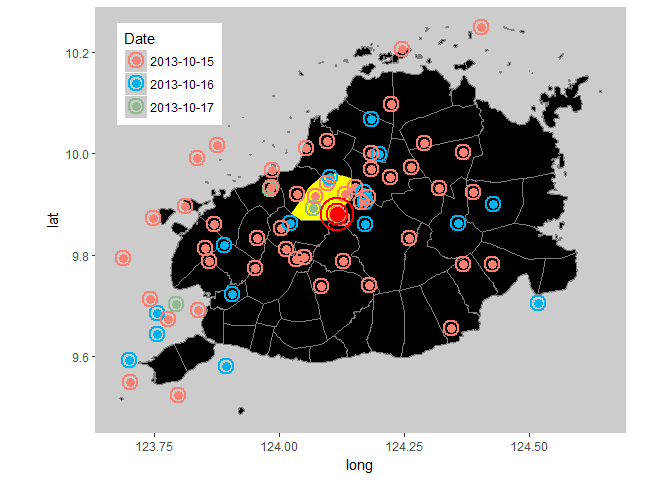
Mapping the color of the points to date puts emphasis on the number of aftershocks that occurred per day.
I think a better way to show how many afershocks were felt each day is to use the function facet_wrap.
bohol_mapdf %>%
ggplot(aes(x = long,
y = lat,
group = group)) +
geom_polygon(fill = "black",
color = "gray50") +
geom_polygon(fill = "yellow",
data = sagbayan_mapdf) +
coord_map() +
geom_point(data = Oct_2015_Quake,
aes(x = longitude,
y = latitude,
color = date,
group = "Null"),
size = 2) +
geom_point(data = Oct_2015_Quake,
aes(x = longitude,
y = latitude,
color = date,
group = "Null"),
size = 4,
stroke = 1.2,
shape = 1) +
theme(panel.background = element_rect(fill = 'gray80'),
panel.grid.major = element_blank(),
panel.grid.minor = element_blank(),
legend.position="bottom",
legend.box = "horizontal") +
xlim(c(123.68114,124.64547)) +
ylim(c(9.48583, 10.25)) +
geom_point(data = max_mag,
aes(x = longitude,
y = latitude,
group = "Null"),
size = 3,
color = "red") +
geom_point(data = max_mag,
aes(x = longitude,
y = latitude,
group = "Null"),
size = 5,
stroke = 1.5,
shape = 1) +
scale_color_manual(values = c("#FA8072",
"#00B2EE",
"#8FBC8F")) +
facet_wrap(~date)
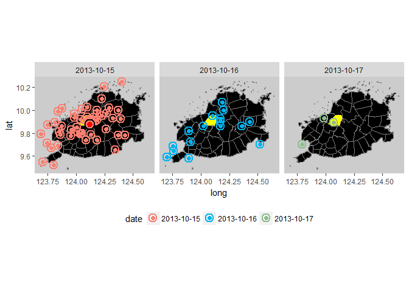
Everyone nowadays are familiar with the nice google maps available in the web. Let’s download a map from google using the ggmap package and plot our data on that map
We will use the geocode function from the package ggmap to obtain the appropriate latitude/longitude center of Bohol from Google. Thanks to the people behind Google for offering these services for free.
At this moment a new project is brewing in my head with regard to a dataset that we used for predicting the prices of homes in Ames, Iowa. One of the projects that I reviewed from my peers in the class contained a map of the houses, which I thought was pretty cool. I’d like to try that next.
bohol <- geocode("Sagbayan, Bohol")
bohol
Please take note that Google Maps API places a limit of 2500 queries per day. We can use the function geocodeQueryCheck function to determine how many queries remain.
For our exploration, let’s use a terrain map from Google
bohol_terrain <- get_map(c(lon = 124.0975,
lat = 9.899196),
zoom = 10,
maptype = "terrain")
bohol_terrain_map <- ggmap(bohol_terrain, extent = 'device')
bohol_terrain_map
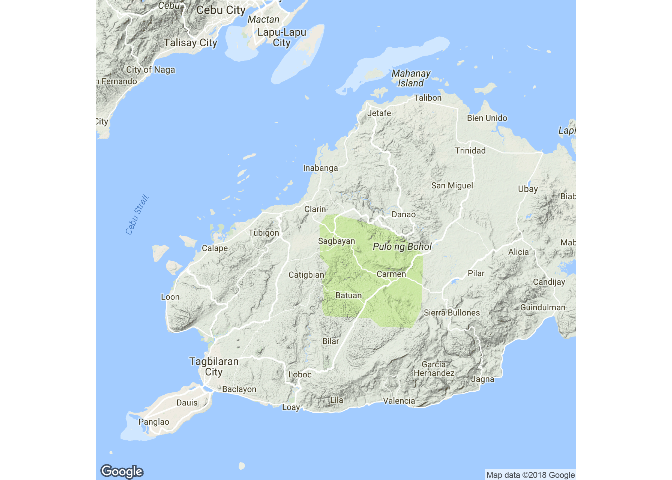
This will be the basemap we will be using for this exploration. There are other maps available from googgle, stamen, osm and cloudmade. You can explore them by specifying the map you want using the arguments source and maptype in the get-map function.
We will now add some points. We will be using size and transparency to map the variable mag, which stands for the Magnitude of the earthquake. you will recognize the earthquake with the largest magnitude by the intensity of the color and its size.
For the next series of plots The emphasis will be on the magnitude of the earthquake and not the date.
bohol_terrain_map +
geom_point(data = Oct_2015_Quake,
aes(x = longitude,
y = latitude,
size = mag,
alpha = mag),
color = "firebrick1") +
scale_size_continuous(name = "Magnitude", range=range(Oct_2015_Quake$mag))
## Warning: Removed 10 rows containing missing values (geom_point).
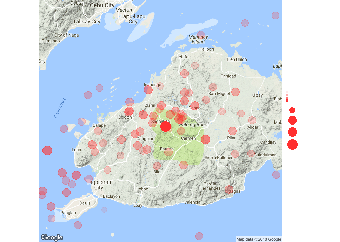
The warning that we got, tells us that there were several points that was not plotted on the map as it was outside of the range of the map. As you can see, the map from google is more zoomed-in than the earlier map we created using ggplot. Hence, some of the data points were not plotted. We’ll set the options in our code chunks to ignore the warnings
It looks good but the sizes of the points fail to convey the differences between the magnitude of the different aftershocks. Instead of using the function scale_size_continuous to scale the sizes of our points, we will try to use the scale_radius function.
scale_radiusbohol_terrain_map +
geom_point(data = Oct_2015_Quake,
aes(x = longitude,
y = latitude,
size = mag,
alpha = mag),
color = "firebrick1") +
scale_radius()
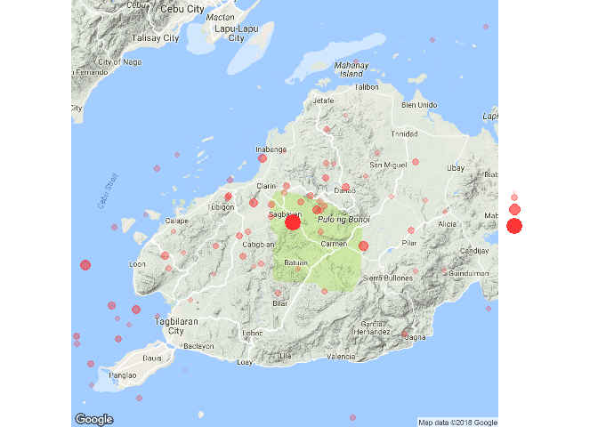
I think the lower values of magnitude got depicted too small. Let’s give it a try without specifying scale_radius or scale_size_continuous
bohol_terrain_map +
geom_point(data = Oct_2015_Quake,
aes(x = longitude,
y = latitude,
size = mag,
alpha = mag),
color = "firebrick1") +
labs(title="7.1M Bohol Earthquake",
subtitle="October 15, 2013",
caption="Data from US Geological Survey")
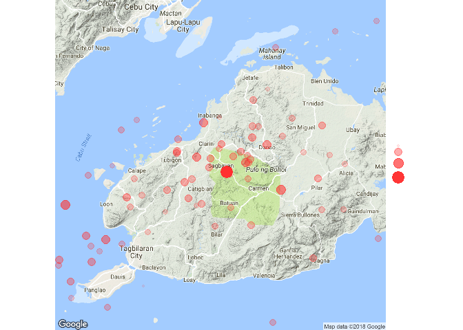
This looks a lot better for my taste. BTW, if you noticed the code above, you’d see that I tried to incorporate a title, subtitle and caption but it did not appear on the plot.
By specifying the argument extent to panel or normal in the function ggmap we can make the title, subtitle, and caption appear.
bohol_terrain %>%
ggmap(extent = 'normal') +
geom_point(data = Oct_2015_Quake,
aes(x = longitude,
y = latitude,
size = mag,
alpha = mag),
color = "firebrick1") +
labs(title="7.1M Bohol Earthquake",
subtitle="October 15, 2013",
caption="Data from US Geological Survey")
Not only do we see the title, subtitle, and caption but we also see the missing points that the warning was telling us about. The behviour of the legend, the size of the map and points changed as well. Notice how large the datapoints are in proportion to the size of the map. This type of setting has a lot of creative potential for adding explanatory text to both sides of the plot using the annotation_custom function in ggplot.
bohol_terrain %>%
ggmap(extent = 'panel') +
geom_point(data = Oct_2015_Quake,
aes(x = longitude,
y = latitude,
size = mag,
alpha = mag),
color = "firebrick1") +
scale_radius(range = c(2, 5)) +
labs(title="7.1M Bohol Earthquake",
subtitle="October 15, 2013",
caption="Data from US Geological Survey")
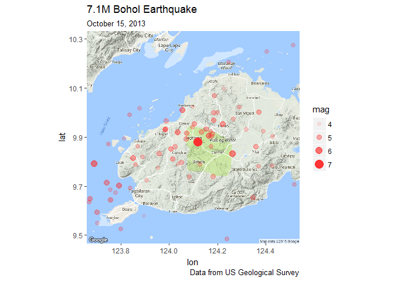
Specifying extent = panel changes the way the plot is printed again. The size of the datapoints have to be adjusted eveytime the size of the map changes. By specifying the argument range to the function scale_radius I was able to change the size of the points to what I think is best and as bonus a single legend represents both the size and transparency.
If you don’t like the axis ticks, labels, and title we can use the function ‘theme` and specify it to its arguments.
bohol_terrain %>%
ggmap(extent = 'panel') +
geom_point(data = Oct_2015_Quake,
aes(x = longitude,
y = latitude,
size = mag,
alpha = mag),
color = "firebrick1") +
scale_radius(range = c(2, 5)) +
labs(title="7.1M Bohol Earthquake",
subtitle="October 15, 2013",
caption="Data from US Geological Survey") +
theme(axis.title = element_blank(),
axis.text = element_blank(),
axis.ticks = element_blank())
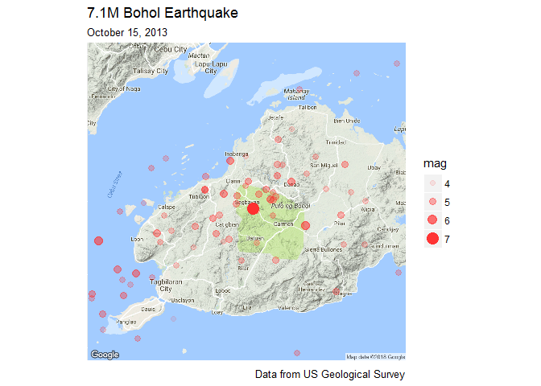
Let’s now explore using shapefiles to map particular towns. Let’s distinguish the town of Sagbayan where the 7.2 magnitude eathquake centered and the town of Loon where the highest number of casualties occured.
We used the fortify function to transform the shapefiles to a dataframe and plot the map using ggplot.
cnames <- read.csv("bohol_labels.csv", stringsAsFactors = FALSE)
sagb_loon_labs <- cnames %>% filter(NAME_2 == "Sagbayan" | NAME_2 == "Loon")
bohol_terrain %>%
ggmap(extent = 'device') +
geom_polygon(data = sagbayan_mapdf,
aes(x =long,
y = lat,
group = group),
fill = "darkcyan") +
geom_polygon(data = loon_mapdf,
aes(x =long,
y = lat,
group = group),
fill = "turquoise") +
geom_point(data = Oct_2015_Quake,
aes(x = longitude,
y = latitude,
size = mag,
alpha = mag),
color = "firebrick1") +
scale_radius(range = c(3, 5)) +
geom_text(data=sagb_loon_labs,
aes(long,
lat,
label = NAME_2),
size=3,
fontface="bold")
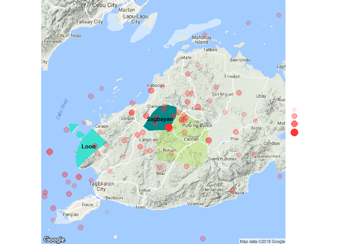
For further emphasis we also added the town names using geom_text. Now let’s try plotting earthquakes using density instead of points. While points are particularly useful to denote particular places in maps, density tends to convey more information about concentraion of points in certain areas or the influence of different values over a particular area.
Creating a contour map in ggplot is easy but interpretting the results is not very staighforward.
To illustrate how a contour map depicts the values of a variable we will overlay the values of the variable mag as labels. In a histogram, the values are group in bins and counted. The number of values in each bin is reflected in the height of the bars. In a contour map, the area between the lines are the bins. The higher values are located near the center and decreases as it extends toward the periphery.
When data points overlap each other or gather in clusters, you can opt to plot a contour map instead of points.
bohol_terrain %>%
ggmap(extent = 'device') +
geom_density2d(data = Oct_2015_Quake,
aes(x = longitude,
y = latitude),
size = 0.9) +
geom_text(data = Oct_2015_Quake,
aes(longitude,
latitude,
label = as.character(mag)),
size=3,
color = "red",
fontface="bold")+
labs(title="7.1M Bohol Earthquake",
subtitle="October 15, 2013",
caption="Data from US Geological Survey") +
theme(axis.title = element_blank(),
axis.text = element_blank(),
axis.ticks = element_blank())
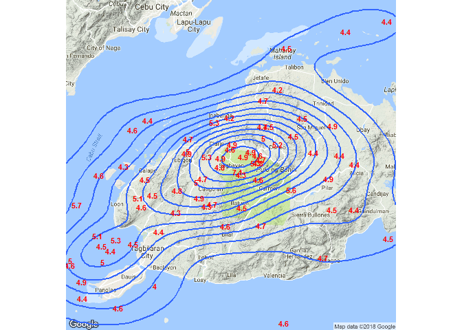
We can see that the highest values are concenterated in the center or the narrowest contour line. As the contour lines increases in width, the values that it encompass gets smaller.
However, just like when you’re creating a linear regression line, there are observatinos that are from the least square line. You can spot stray values that are equally high in the periphery, particularly the value 5.7 on the left margin.
Let’s look at the stat_density2d function which creates density plots. To see the how the points, contour lines and denstities are related to each other, lets plot them together. Thanks to ggplot’s feature that allows us to plot different layers together we can see all three in action in one plot.
bohol_terrain %>%
ggmap(extent = 'device') +
geom_density2d(data = Oct_2015_Quake,
aes(x = longitude,
y = latitude),
size = 0.9,
bins = 8) +
stat_density2d(data = Oct_2015_Quake,
aes(x = longitude,
y = latitude,
fill = ..level..,
alpha = ..level..),
geom = "polygon",
size = 0.01,
bins = 8) +
geom_text(data = Oct_2015_Quake,
aes(longitude,
latitude,
label = as.character(mag)),
size=3,
color = "red",
fontface="bold") +
labs(title="7.1M Bohol Earthquake",
subtitle="October 15, 2013",
caption="Data from US Geological Survey") +
theme(axis.title = element_blank(),
axis.text = element_blank(),
axis.ticks = element_blank())
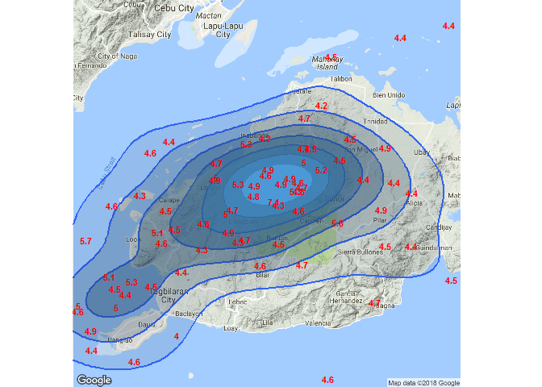
The density plot is more dramatic compared to points or contour lines. We can control the number of denstity groups just like when we control the number of bins in a histogram.
We can experiment with changing the color of the density in our plot using the scale_fill_gradient function.
bohol_terrain_map +
stat_density2d(data = Oct_2015_Quake,
aes(x = longitude,
y = latitude,
fill = ..level..,
alpha = ..level..),
geom = "polygon",
size = 0.01,
bins = 8) +
scale_fill_gradient(low = "yellow",
high = "red") +
scale_alpha(range = c(0.2, 0.7))
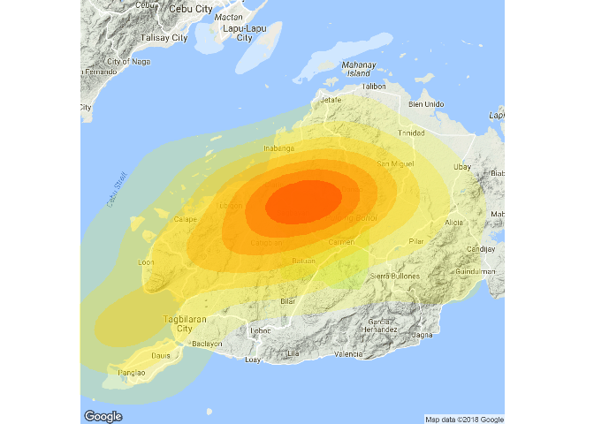
let’s try to put emphasis on the whole island of Bohol by plotting a shapefile over it. We’ll add in the administrative boundaries to seperate one town from another. This could prove to be useful for visualizing which administrative areas are most and least affected by the earthquakes.
bohol_terrain_map +
theme(legend.position = 'none') +
geom_polygon(data = bohol_mapdf,
aes(x =long,
y = lat,
group = group),
color = "darkcyan") +
stat_density2d(aes(fill = ..level..,
x = longitude,
y = latitude),
alpha = .4,
bins = 8,
geom = "polygon",
data = Oct_2015_Quake) +
scale_fill_viridis() +
geom_polygon(data = loon_mapdf,
aes(x = long,
y = lat,
group = group),
color = "green",
fill = "red")
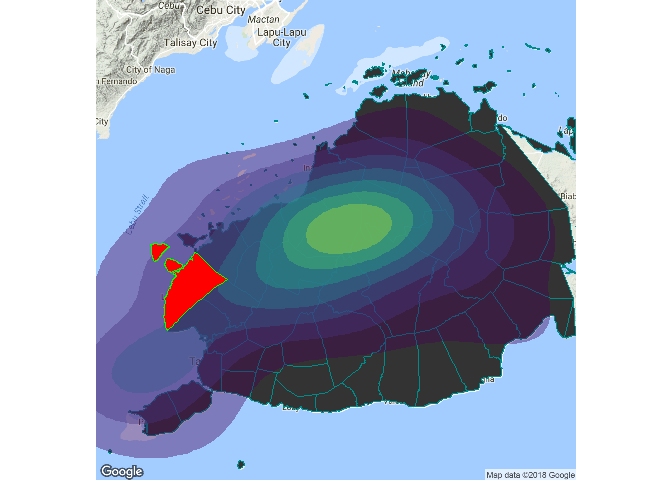
The plot looks good except for the clipping that happened at the right margin. Could the error have come from our shapefiles???
ggplot(data = bohol_mapdf) +
geom_polygon(aes(x = long,
y = lat,
group = group),
color = "black") +
stat_density2d(aes(fill = ..level..,
x = longitude,
y = latitude),
alpha = .2,
geom = "polygon",
data = Oct_2015_Quake,
size = 0.01,
bins = 8) +
scale_fill_viridis() +
geom_polygon(data = loon_mapdf,
aes(x = long,
y = lat,
group = group),
color = "green",
fill = "red")
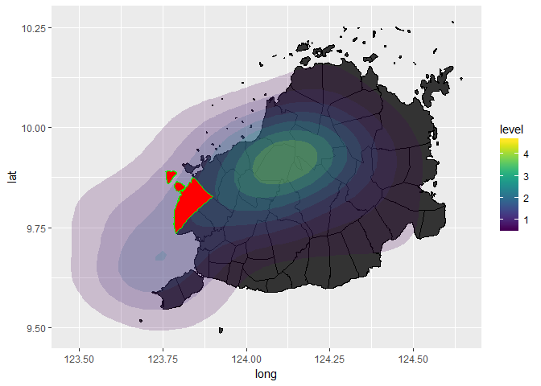
No, The shapefiles show a complete map on this plot. The clipping is probably happening because the right margin approximates the edge of the google map.
We’ll need to specify a new longitude/latitude location to extend the right margin of the map. We will create a numrical vector that will contain the left, bottom, right, and top limits of the map we want and google will try to stitch the image we need using the maps it has available.
bbox <- c(123.6518, 9.465327, 124.7567, 10.33142)
custom_latlong <- get_map(location = bbox,
source = "google",
zoom = 10,
maptype = "terrain")
custom_latlong %>%
ggmap(extent = "device") +
geom_polygon(data = bohol_mapdf,
aes(x =long,
y = lat,
group = group),
color = "darkcyan") +
stat_density2d(aes(fill = ..level..,
x = longitude,
y = latitude),
alpha = .4, bins = 8,
geom = "polygon",
data = Oct_2015_Quake) +
scale_fill_viridis() +
geom_polygon(data = loon_mapdf,
aes(x = long,
y = lat,
group = group),
color = "green",
fill = "red")
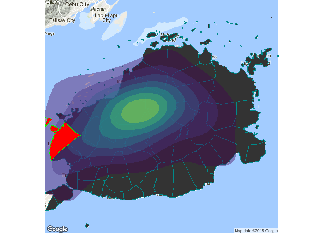
That seem to work but it created a lot of empty spaces on the lower part of the plot and it removed other landmass that act as reference points in terms of size of the island of Bohol. The island of Cebu on the upper left area acts as a landmark. More people are familiar with the island of Cebu compared to Bohol, so i’d like to keep it there. We can try decreasing our argument to zoom from 10 to 9.
zoom9 <- get_map(c(lon = 124.0975,
lat = 9.899196),
zoom = 9,
maptype = "terrain")
zoom9 %>% ggmap(extent = "device") +
geom_polygon(data = bohol_mapdf,
aes(x =long,
y = lat,
group = group),
color = "darkcyan") +
stat_density2d(aes(fill = ..level..,
x = longitude,
y = latitude),
alpha = .4, bins = 8,
geom = "polygon",
data = Oct_2015_Quake) +
scale_fill_viridis() +
geom_polygon(data = loon_mapdf,
aes(x = long,
y = lat,
group = group),
color = "green",
fill = "red")

That made the plot very small. No problem, we can adjust the boundaries of the map to show only the areas we want.
#Final plot
zoom9 %>% ggmap(extent = "panel") +
geom_polygon(data = bohol_mapdf,
aes(x =long,
y = lat,
group = group),
color = "darkcyan") +
stat_density2d(aes(fill = ..level..,
x = longitude,
y = latitude),
alpha = .4, bins = 8,
geom = "polygon",
data = Oct_2015_Quake) +
scale_fill_viridis() +
geom_polygon(data = loon_mapdf,
aes(x = long,
y = lat,
group = group),
color = "green",
fill = "red") +
coord_map(xlim = c(123.3,
125.01),
ylim = c(9.45,
10.35)) +
labs(title="7.1M Bohol Earthquake",
subtitle="October 15, 2013",
caption="Data from US Geological Survey") +
theme(axis.title = element_blank(),
axis.text = element_blank(),
axis.ticks = element_blank())
## Coordinate system already present. Adding new coordinate system, which will replace the existing one.
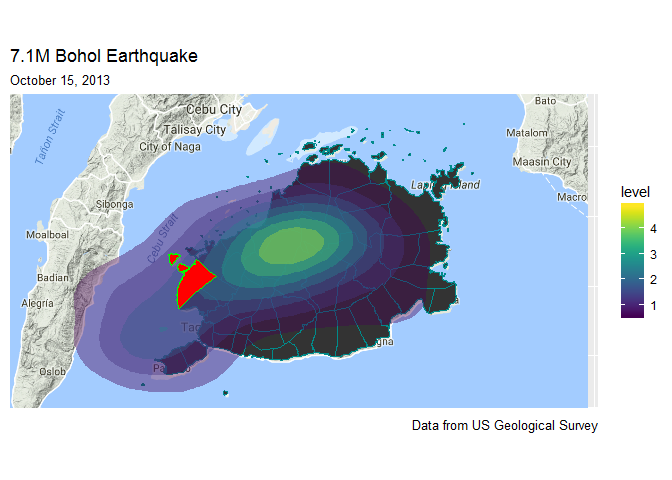
I think that’s the plot i want. Thank you for joining me and I hope you learned something in this exploration.
EJLO “I used to extract teeth now i extract bytes”